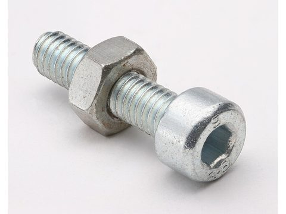
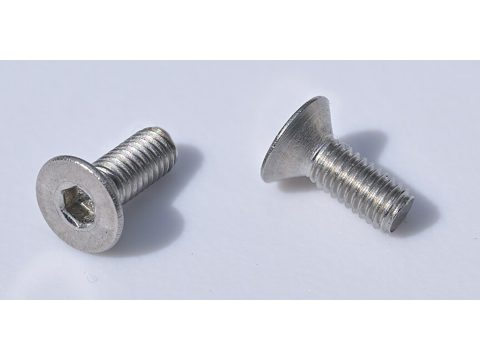
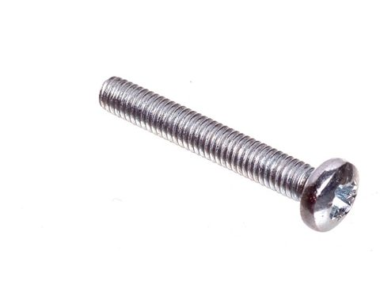
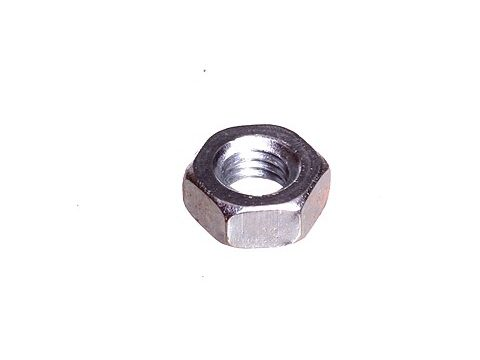
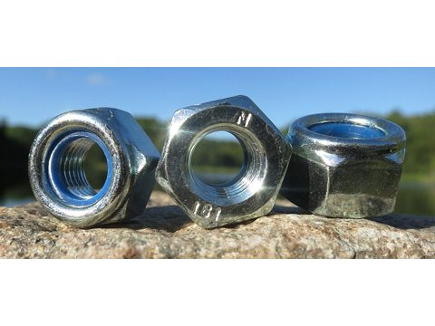
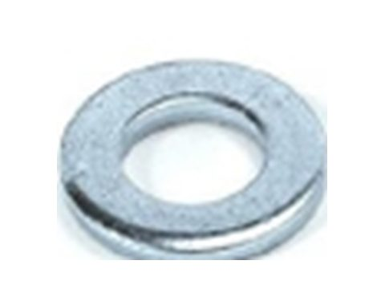
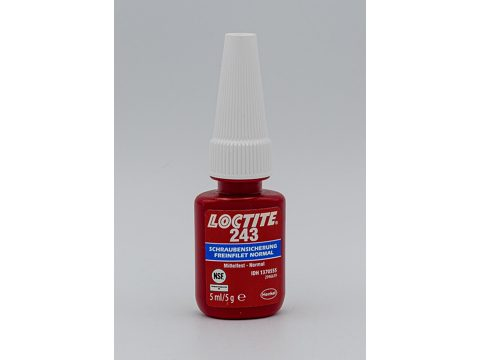
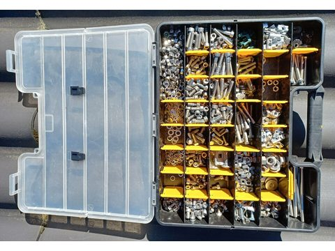
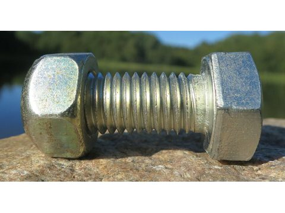

Lista de compras · tornillería de MathBot
SCARA de HowToMechatronics + cabezal A v3 (disco tri-herramienta) · 31-oct-2026 · sin precios (son tentativos)
Cómo pedirlos. En la ferretería se piden por medida métrica: M4 × 35 = rosca de 4 mm de diámetro y 35 mm de largo
(el largo se mide bajo la cabeza; en los avellanados, de punta a punta). Pidan acero galvanizado o negro, grado 8.8 si lo tienen.
Lleven 1 o 2 de más de cada tornillo chico (M2–M3): se pierden y se barren.
Las medidas salen del CAD de HowToMechatronics, de BRAZO SCARA/DISEÑO FINAL/Cabezal disco/README.md y del presupuesto
(presupuesto/MathBot_Presupuesto_SCARA.xlsx, filas TOR y CAB-06).
Qué es cada cosa · nombre y cómo más le dicen; la foto muestra el tipo de pieza, no siempre la medida









1 · Brazo SCARA · lo que pide el CAD de HowToMechatronics
| Qué pedir | Cant. | Dónde va | Tipo | |
|---|---|---|---|---|
| Medida fija (vienen en el CAD) | ||||
| M4 × 60 + tuerca de seguridad M4 | 4 + 4 | Polea de 110 dientes → acople J1 | Allen | |
| M4 × 50 + tuerca de seguridad M4 | 4 + 4 | Polea de 92 dientes → acople J2 | Allen | |
| M8 × 45 + arandela M8 + tuerca de seguridad M8 | 2 + 2 + 2 | Eje de las poleas intermedias de J1 y J2 | Allen o hexagonal | |
| M5 × 25 | 4 | Plataforma Z → brazo 1 | Allen | |
| M5 × 35 + 2 tuercas M5 c/u | 4 + 8 | Tensores de correa Recomendado | Allen | |
| M4 × 40 + tuerca M4 | 12 + 12 | Base del robot → tabla de madera Largo = grosor de la base + ≈20 mm de madera: midan la base antes de comprar. | Allen | |
| M2 × 10 + tuerca M2 | 8 + 8 | Finales de carrera (2 por switch) Solo si los switches no los traen. Sirve también autorroscante para plástico. | Cabeza redonda | |
| Tornillos chicos (estimados por los agujeros del CAD: Ø3.2 = M3, Ø4.1 = M4) | ||||
| M3 × 10 | 16 | 4 por cada NEMA 17 Si la placa del motor es gruesa, M3 × 12. | Allen | |
| M3 × 16 | 4 | Tuerca de latón del husillo T8 | Allen | |
| M4 × 20 | 22 | 8 abrazaderas de varilla (16) y J2 Coupler → brazo 2 (6) | Allen | |
| M4 × 16 a 30 (varios largos) | 20–30 | Tapas, placas del eje Z, polea de J3 El largo exacto se ve al armar: aquí rinde el surtido. | Allen | |
| Tuercas M3 y M4 para los tornillos chicos | 4 + ≈ 50 | Donde la pieza impresa trae alojamiento de tuerca Los M3 de los NEMA se roscan en el motor: no llevan tuerca. | Tuerca | |
| o bien un surtido Allen M3/M4/M5 con tuercas | 1 | Reemplaza las cuatro filas de arriba (TOR-01 del presupuesto) | Surtido | |
2 · Cabezal A v3 · disco con plumón, electroimán y sensor
| Qué pedir | Cant. | Dónde va | Tipo | |
|---|---|---|---|---|
| M4 × 35 + arandela M4 + tuerca M4 | 4 + 4 + 4 | Placa + separador + connector → brida del J3 Coupler Arandela solo bajo la cabeza; tuerca arriba con fijador y sin arandela (el final de carrera de J3 pasa a 1.8 mm). | Allen | |
| M3 × 10 | 4 | Soporte del plumón y del servo → placa | Allen | |
| M3 × 12 | 1 | Apriete del collar del plumón | Allen | |
| M3 × 16 avellanado | 3 | Connector → separador (2) y puente → poste (1) | Avellanado | |
| M3 × 20 | 3 | Abrazadera del sensor: 2 la fijan a la placa, 1 la aprieta | Allen | |
| M3 × 35 | 1 | Electroimán KK-P20/15 → placa Si su electroimán trae rosca M4, M4 × 35. | Allen | |
| Tuerca M3 | 11 | Separador 2, placa 4, abrazadera 3, collar 1, poste 1 | Tuerca | |
| Fijador de rosca azul | 1 | Tuercas M4 sobre la brida del J3 Coupler | Fijador | |
| Tornillos M2 del servo | — | Vienen con el SG90 / MG90S | — |
3 · Opcional: electroimán hecho a mano · solo si no compran el KK-P20/15
Las dos variantes de anatomia/electroiman/ cambian la tornillería del electroimán (el resto del cabezal queda igual):
| Variante | Qué pedir | Reemplaza a | |
|---|---|---|---|
| Perno | Perno hexagonal 3/8"-16 × 1" (rosca gruesa UNC) + 2 arandelas SAE 3/8" + 1 tuerca 3/8"; tornillo M3 × 20 a la placa | M3 × 35 | |
| Olla | Tornillo M3 × 40 al núcleo roscado (núcleo Ø8, camisa de tubo EMT ½") | M3 × 35 |
Además de la tornillería, del cabezal falta comprar: electroimán 12 V KK-P20/15 (o los materiales de la sección 3), sensor inductivo LJ12A3-4-Z/BX,
micro servo SG90 o MG90S, resorte de compresión Ø15–16 × 30 mm de alambre 0.5–0.6 (Ø interior ≥ 13.5 mm) y plumón Sharpie fino.
Detalle en simulador_scara/CABEZALES_compras.md.
Créditos de las fotos
- Tornillo Allen: Afrank99, Wikimedia Commons, CC BY-SA 3.0.
- Tornillo avellanado: 4300streetcar, Wikimedia Commons, CC BY 4.0 (recortada).
- Cabeza redonda: oomlout, Wikimedia Commons, CC BY-SA 2.0 (recortada).
- Tuerca hexagonal: oomlout, Wikimedia Commons, CC BY-SA 2.0 (recortada).
- Tuerca de seguridad: R. Henrik Nilsson, Wikimedia Commons, CC BY 4.0.
- Arandela plana: ARFISA Representaciones, SCP, Wikimedia Commons, CC BY-SA 3.0 (recorte de una de las arandelas).
- Fijador de rosca: Hugo LUC, Wikimedia Commons, CC BY-SA 4.0 (recortada).
- Surtido: Asurnipal, Wikimedia Commons, CC BY-SA 4.0.
- Perno hexagonal: R. Henrik Nilsson, Wikimedia Commons, CC BY 4.0.


4 · Para el mostrador · todo sumado por medida
| Medida | Tipo | Brazo | Cabezal | Total | |
|---|---|---|---|---|---|
| Tornillos | |||||
| M2 × 10 | Cabeza redonda | 8 | — | 8 | |
| M3 × 10 | Allen | 16 | 4 | 20 | |
| M3 × 12 | Allen | — | 1 | 1 | |
| M3 × 16 | Allen | 4 | — | 4 | |
| M3 × 16 | Avellanado | — | 3 | 3 | |
| M3 × 20 | Allen | — | 3 | 3 | |
| M3 × 35 | Allen | — | 1 | 1 | |
| M4 × 16 a 30 | Allen (o surtido) | 20–30 | — | 20–30 | |
| M4 × 20 | Allen | 22 | — | 22 | |
| M4 × 35 | Allen | — | 4 | 4 | |
| M4 × 40 | Allen | 12 | — | 12 | |
| M4 × 50 | Allen | 4 | — | 4 | |
| M4 × 60 | Allen | 4 | — | 4 | |
| M5 × 25 | Allen | 4 | — | 4 | |
| M5 × 35 | Allen | 4 | — | 4 | |
| M8 × 45 | Allen o hexagonal | 2 | — | 2 | |
| Tuercas, arandelas y fijador | |||||
| Tuerca M2 | Hexagonal | 8 | — | 8 | |
| Tuerca M3 | Hexagonal | 4 | 11 | 15 | |
| Tuerca M4 | Hexagonal | 12 + ≈ 50 | 4 | ≈ 66 | |
| Tuerca M4 | De seguridad | 8 | — | 8 | |
| Tuerca M5 | Hexagonal | 8 | — | 8 | |
| Tuerca M8 | De seguridad | 2 | — | 2 | |
| Arandela M4 | Plana | — | 4 | 4 | |
| Arandela M8 | Plana | 2 | — | 2 | |
| Fijador de rosca azul | Frasco chico | — | 1 | 1 | |
Si compran el surtido M3/M4/M5, solo hace falta pedir aparte lo largo: M3 × 35, M4 × 35, M4 × 40, M4 × 50, M4 × 60, M5 × 25, M5 × 35 y M8 × 45, más los avellanados M3 × 16, las tuercas de seguridad y el fijador. Las tuercas M3/M4 de los tornillos chicos son estimadas: el surtido normalmente trae de sobra.